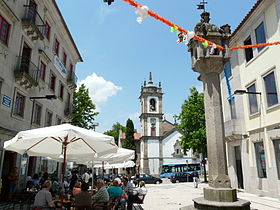

Vila Real é uma cidade portuguesa e capital do Distrito de Vila Real, situada na Região Norte e sub-região do Douro e na antiga província de Trás-os-Montes e Alto Douro, com cerca de 30 000 habitantes no seu perímetro urbano (2012). É capital da província tradicional de Trás-os-Montes e Alto Douro.
É sede de um município com 378,80 km² de área e 51 850 habitantes (2011), subdividido desde a reorganização administrativa de 2012/2013 em 20 freguesias. O município é limitado a norte pelos municípios de Ribeira de Pena e de Vila Pouca de Aguiar, a leste por Sabrosa, a sul pelo Peso da Régua, a sudoeste por Santa Marta de Penaguião, a oeste por Amarante e a noroeste por Mondim de Basto.
Crescida num planalto situado na confluência dos rios Corgo e Cabril, a cidade está enquadrada numa bela paisagem natural (Escarpas do Corgo), tendo como pano de fundo as serras do Alvão e, mais distante, do Marão. Com mais de setecentos anos de existência, Vila Real foi outrora conhecida como a "Corte de Trás-os-Montes", devido ao elevado número de casas brasonadas que então tinha.
Vila Real tem um clima temperado mediterrânico (tipo Csb), de verão moderadamente quente, mas já de transição para o clima temperado marítimo, dada a temperatura média anual de cerca de 13,5 °C e a precipitação anual acumulada superior a 1000 mm. Devido à sua situação geográfica (as Serras do Marão e Alvão actuam como barreiras naturais), Vila Real tem um clima com alguma continentalidade quando comparada com a costa ocidental portuguesa: tem um Inverno relativamente prolongado, chegando as temperaturas ocasionalmente abaixo dos 0 °C; é comum nevar pelo menos uma vez por ano em cotas acima de 600 m. O Verão é moderadamente quente, com temperaturas máximas elevadas mas noites notavelmente frescas. Por vezes as diferenças de temperatura são bruscas. Estas características deram origem ao provérbio "Nove meses de Inverno, três meses de inferno", ainda que esta dicotomia seja claramente mais acentuada no nordeste transmontano.
